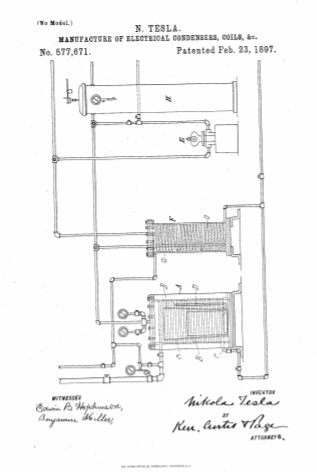

Descarga la patente original en esté enlace


Que se sepa que yo, NIKOLA TESLA , ciudadano de los Estados Unidos, que reside en Nueva York, en el condado y en el estado de Nueva York, he inventado ciertas mejoras nuevas y útiles en la fabricación de condensadores eléctricos, bobinas y similares. Dispositivos, de los que se detalla a continuación, se hace referencia al dibujo que acompaña y forma parte del mismo.
Mi invención es una mejora en la fabricación de condensadores eléctricos, bobinas y otros dispositivos de carácter similar en los que los conductores diseñados para formar caminos para corrientes de alto potencial se acercan entre sí. Entre tales dispositivos se incluyen muchas formas de condensadores, transformadores, bobinas de autoinducción, reóstatos y similares.
Hasta ahora he demostrado que la eficacia y viabilidad de tales dispositivos se mejoran en gran medida mediante la exclusión de aire o gas del dieléctrico que separa los conductores o las partes remotas del mismo conductor; y el objeto de mi mejora actual es asegurar tal exclusión de aire de la manera más perfecta posible, de una manera conveniente y practicable. Para ello coloco el condensador u otro dispositivo a tratar en un receptáculo del cual el aire puede salir más o menos perfectamente, y en vacío introduzco una sustancia aislante, que se licua al ser sometida al calor, como la parafina, que rodea dicho dispositivo y encuentra su camino hacia sus intersticios.
Cuando el dispositivo se ha saturado completamente con el material aislante, generalmente se deja enfriar hasta que el material comienza a solidificarse. A continuación, se introduce aire a presión en el recipiente que contiene el dispositivo y se mantiene la presión hasta que se solidifica toda la masa de material aislante. Mediante este tratamiento se evita la presencia de aire o espacios vacíos en el dieléctrico, que de otro modo podrían formarse por la contracción del material aislante cuando se enfría.
Se puede seguir cualquier plan o utilizar un aparato para asegurar las dos condiciones necesarias para lograr el resultado deseado; es decir, aplicar el material aislante fluido al vacío y posteriormente someterlo o solidificarlo a presión. El grado de agotamiento o de presión puede variar, obteniendo muy buenos resultados un vacío de unas veintinueve pulgadas y una presión de unas cien libras. Sin embargo, se puede afirmar que cuando se aplica presión hidráulica, se aseguran fácilmente presiones mucho más altas y son ventajosas.
Para facilitar la realización del proceso, he ideado un aparato sencillo y útil, que se ilustra parcialmente en sección en el dibujo adjunto. Como las partes de dicho aparato son todas de construcción bien conocida, el aparato en su conjunto se comprenderá completamente sin una descripción completa de sus detalles.
A es un tanque o receptáculo que puede cerrarse herméticamente. Dentro de este tanque hay una bobina de vapor C, que rodea un recipiente B, preferiblemente con lados ligeramente inclinados y provista de un tubo o tubería D, que se abre a él cerca de su base.
El condensador u otro dispositivo a tratar se coloca en el recipiente B, y alrededor del recipiente se empaqueta un material aislante adecuado en cantidad suficiente cuando se licúa por calor para fluir a través de la tubería D hacia el recipiente B y llenar el espacio en este último. a la parte superior del condensador u otro dispositivo colocado en el mismo.
Es deseable introducir en la tubería D suficiente material derretido para llenarla antes de usar el aparato y para hacer la tubería con un material de mala conducción del calor, de modo que transcurra un poco de tiempo después de que se aplique el calor para derretir el material en el tanque A antes de que comience el flujo a través de la tubería.
Cuando el aparato ha sido así preparado, el aire del interior del tanque A se extrae tan completamente como sea posible mediante una bomba de aire E y el vapor pasa a través del serpentín C. Con el fin de evitar el acceso de cualquiera de los componentes volátiles de el material aislante de la bomba, un condensador F, con un serpentín de enfriamiento G, se interpone en la tubería entre el tanque y la bomba. Después de que se haya asegurado un vacío parcial en el tanque A y el material aislante licuado se haya introducido en el recipiente B, se puede detener la bomba y conectar el tanque con un depósito H, del cual se ha descargado el aire, y se permite que el aparato se descargue. Deje reposar hasta que todos los intersticios del condensador hayan sido impregnados con el material aislante. Luego se apaga el vapor y se pasa agua fría a través del serpentín C. A continuación, se invierten las conexiones con la bomba y se fuerza el aire al interior del depósito y el depósito H y el enfriamiento y solidificación adicionales del material aislante se lleva a cabo bajo una presión considerablemente mayor que la de la atmósfera. Después de que el material aislante se haya enfriado y solidificado, el condensador u otro dispositivo, con la masa adherida de material aislante, se retira del receptáculo y se retira el material aislante superfluo.
He descubierto que los condensadores, transformadores y aparatos similares tratados por este proceso son de una calidad muy superior y especialmente adecuados para circuitos que transmiten corrientes de alta frecuencia y potencial.
Soy consciente de que los conductores revestidos con un material más o menos poroso han sido tratados colocándolos en un recipiente cerrado, expulsando el aire del recipiente, luego introduciendo un compuesto aislante fluido y sometiendo el mismo a presión, con el fin de lograr una mayor perfección. incorporando el compuesto aislante con el revestimiento circundante o revestimiento de los conductores y haciendo que dicho compuesto entre en los intersticios de dicho revestimiento, y aplico este principio de expulsar el aire e introducir el compuesto aislante fluido bajo presión para llevar a cabo mi mejora. Mi proceso, sin embargo, se diferencia del anterior principalmente en esto, que busco no solo llenar los poros de cualquier material poroso que pueda interponerse entre los conductores de un dispositivo como un condensador o bobina, sino llenar todos los espacios. en el dieléctrico, por lo que el aire o los espacios vacíos, cuya presencia en el dieléctrico es tan perjudicial para el dispositivo, pueden evitarse eficazmente. Para ello permito que el compuesto aislante después de su incorporación al dispositivo, bajo agotamiento y presión, se enfríe y solidifique, de modo que no solo se sustituya el aire por un compuesto aislante sólido, sino la formación de espacios vacíos por la contracción del masa en enfriamiento prevenida.
Lo que digo es:
23 de febrero de 1897.
Nikola Tesla.